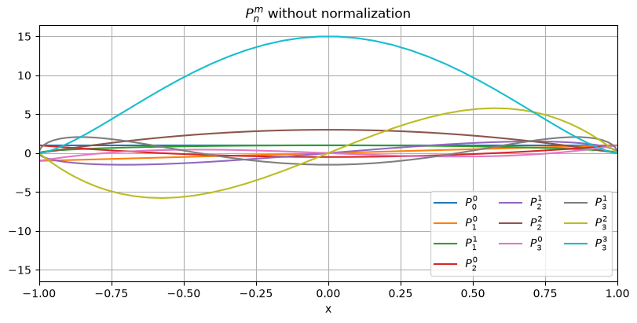
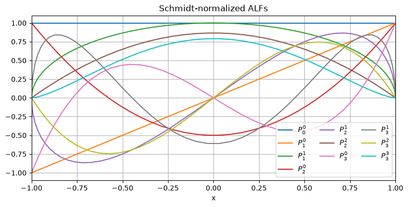
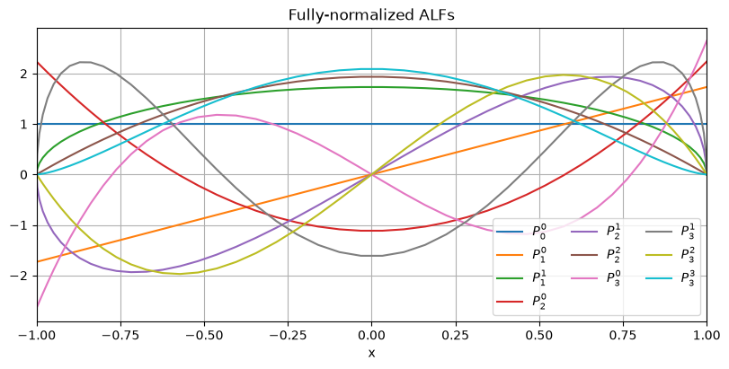
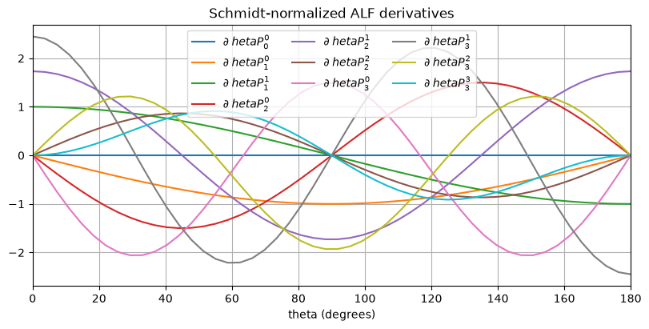

Associated Legendre functions#
The associated Legendre functions (ALFs) \(P_n^m(x)\) are often used in spherical harmonic models in geomagnetism, gravimetry, and other disciplines. They are solutions to Legendre’s differential equation
which has non-trivial and non-singular solutions in the [-1, 1] range when \(n\) (the degree) and \(m\) (the order) are integers and \(0 \le m \le n\). It’s common in spherical harmonics for the Legendre functions to receive the cosine of the colatitude \(\theta\) as input
Choclo provides highly optimized implementations of the ALFs and their derivatives, with two different normalization factors. Our functions employ techniques from [Holmes2002] to make them accurate at least to a maximum degree of 2800.
The ALFs and their derivatives are implemented in module choclo.legendre.
import numpy as np
import matplotlib.pyplot as plt
from choclo import legendre
Let’s calculate and plot different versions of the ALFs up to degree 3 for the full range of \(\theta\):
theta = np.linspace(0, 180, 50)
x = np.cos(np.radians(theta))
max_degree = 3
No normalization#
First, we’ll show what the functions look like when no normalization is used. Our function calculates \(P_n^m(x)\) for a single \(x\) and will not accept an array argument. Plus, since the equations used to calculate these functions are recursive, it’s not possible to calculate them for a single degree \(n\) and order \(m\). All degrees and orders up to the desired maximum are always calculated.
Our functions provide their output values in an array passed as the last argument of the function. This removes the memory allocation of the output array from inside the function and allows users to control when the allocation happens. In spherical harmonics, it’s common to calculate ALFs inside a loop, and reducing the number of unnecessary memory allocations can greatly speed up the implementation.
To get their values for all elements of the theta array, we can make
a 3D array for the output values of \(P_n^m\) with the first dimension
representing the argument \(x\) and fill it out in a loop one by one:
p = np.zeros((x.size, max_degree + 1, max_degree + 1))
for i, xi in enumerate(x):
legendre.associated_function(xi, max_degree, p[i])
Now we can plot the functions by slicing them at the desired degree and order:
plt.figure(figsize=(8, 4), layout="constrained")
plt.title("$P_n^m$ without normalization")
for n in range(max_degree + 1):
for m in range(n + 1):
plt.plot(x, p[:, n, m], label=f"$P_{n}^{m}$")
plt.legend(ncols=3)
plt.xlabel("x")
plt.xlim(-1, 1)
maxabs = 1.1 * np.abs(p).max()
plt.ylim(-maxabs, maxabs)
plt.grid()
plt.show()

Notice how the amplitude of the ALFs increase with the degree \(n\). This can cause problems of overflow for high degrees. In general, calculating ALFs for degrees largen than 15 requires some type of normalization. It’s generally recommended to always use the normalized version of the ALFs instead.
Normalization#
Schmidt normalization is often used in geomagnetic field models.
Let’s calculate the ALFs again using this normalization with function
choclo.legendre.associated_function_schmidt to show what they look like
and compare:
p = np.zeros((x.size, max_degree + 1, max_degree + 1))
for i, xi in enumerate(x):
legendre.associated_function_schmidt(xi, max_degree, p[i])
plt.figure(figsize=(8, 4), layout="constrained")
plt.title("Schmidt-normalized ALFs")
for n in range(max_degree + 1):
for m in range(n + 1):
plt.plot(x, p[:, n, m], label=f"$P_{n}^{m}$")
plt.legend(ncols=3)
plt.xlabel("x")
plt.xlim(-1, 1)
maxabs = 1.1 * np.abs(p).max()
plt.ylim(-maxabs, maxabs)
plt.grid()
plt.show()

Notice how the amplitudes stay roughly constant with the degree.
For gravity field models, fully normalized ALFs are often used.
Let’s calculate the ALFs again using this normalization with function
choclo.legendre.associated_function_fully to show what they look like
and compare:
p = np.zeros((x.size, max_degree + 1, max_degree + 1))
for i, xi in enumerate(x):
legendre.associated_function_fully(xi, max_degree, p[i])
plt.figure(figsize=(8, 4), layout="constrained")
plt.title("Fully-normalized ALFs")
for n in range(max_degree + 1):
for m in range(n + 1):
plt.plot(x, p[:, n, m], label=f"$P_{n}^{m}$")
plt.legend(ncols=3)
plt.xlabel("x")
plt.xlim(-1, 1)
maxabs = 1.1 * np.abs(p).max()
plt.ylim(-maxabs, maxabs)
plt.grid()
plt.show()

Notice that there isn’t a drastic change between Schmidt- and fully-normalized ALFs. The choice is more about convention between different disciplines.
Derivatives#
For spherical harmonics, the ALFs are usually functions of the cosine of the colatitude \(\theta\). For some field components, the spherical harmonic synthesis requires the derivative
Choclo provides functions for calculating these derivatives for all supported normalizations. The recursive relations to calculate the derivatives require the values of \(P_n^m\), so they must be calculated first. The functions take as input the calculated values of the ALF for all degrees and orders up to the desired maximum. Just like the ALFs themselves, the output values are provided in an array that is passed as the last argument to the function.
To calculate the derivatives for all values of the colatitude \(\theta\),
we’ll use the same trick of making a 3D array with the first dimension
representing the argument \(x\) and fill it out in a loop.
Let’s use the Schmidt-normalized ALF from
choclo.legendre.associated_function_schmidt_derivative as an example:
p = np.zeros((x.size, max_degree + 1, max_degree + 1))
dp = np.zeros((x.size, max_degree + 1, max_degree + 1))
for i, value in enumerate(x):
legendre.associated_function_schmidt(value, max_degree, p[i])
legendre.associated_function_schmidt_derivative(max_degree, p[i], dp[i])
Now we can plot the derivatives by slicing them at the desired degree and order:
plt.figure(figsize=(8, 4), layout="constrained")
plt.title("Schmidt-normalized ALF derivatives")
for n in range(max_degree + 1):
for m in range(n + 1):
plt.plot(theta, dp[:, n, m], label=f"$\partial_\theta P_{n}^{m}$")
plt.legend(ncols=3)
plt.xlabel("theta (degrees)")
plt.xlim(0, 180)
maxabs = 1.1 * np.abs(dp).max()
plt.ylim(-maxabs, maxabs)
plt.grid()
plt.show()

Here, we used the Schmidt-normalized ALFs as an example but the exact same procedure could be done for any other version of the ALFs.